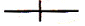
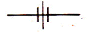
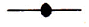
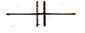
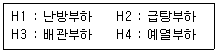

에너지관리기능사 (2013-07-21 기출문제)
1과목: 임의 구분
1. 노내에 분사된 연료에 연소용 공기를 유효하게 공급 확산시켜 연소를 유효하게 하고 확실한 착화와 화염의 안정을 도모하기 위하여 설치하는 것은?
- 화염검출기
- 보염장치
- 버너 정지 인터록
- 연료 차단밸브
(정답률: 86%)

2. 보일러의 수면계와 관련된 설명 중 틀린 것은?
- 증기보일러에는 2개(소용량 및 소형관류보일러는 1개) 이상의 유리수면계를 부착하여야 한다. 다만, 단관식 관류보일러는 제외한다.
- 유리수면계는 보일러 동체에만 부착하여야 하며 수주관에 부착하는 것은 금지하고 있다.
- 2개 이상의 원격지시수면계를 시설하는 경우에 한하여 유리수면계를 1개 이상으로 할 수 있다.
- 유리수면계는 상·하에 밸브 또는 콕크를 갖추어야 하며, 한눈에 그것의 개·폐 여부를 알 수 있는 구조이어야 한다.다만, 소형관류보일러에서는 밸브 또는 콕크를 갖추지 아니할 수 있다.
(정답률: 63%)
3. 다음 중 보일러의 안전장치로 볼 수 없는 것은?
- 급수펌프
- 화염검출기
- 고저수위 경보장치
- 압력조절기
(정답률: 88%)
4. 어떤 보일러의 3시간 동안 증발량이 4500㎏ 이고, 그때의 급수 엔탈피가 25kcal/㎏, 증기엔탈피가 680kcal/㎏이라면 상당증발량은 약 몇 ㎏/hr 인가?
- 551
- 1,684
- 1,823
- 3,⑤1
(정답률: 60%)
5. 보일러 2마력을 열량으로 환산하면 약 몇 kcal/h 인가?
- 10,780
- 13,000
- 15,650
- 16,870
(정답률: 81%)
6. 전자밸브가 작동하여 연료공급을 차단하는 경우로 거리가 먼 것은?
- 보일러수의 이상 감수시
- 증기압력 초과시
- 점화 중 불착화시
- 배기가스온도의 이상 저하시
(정답률: 66%)
7. 운전 중 화염이 블로우 오프(blow-off) 된 경우 특정한 경우에 한하여 재점화 및 재시동을 할 수 있다. 이 때 재점화와 재시동의 기준에 관한 설명으로 틀린 것은?
- 재 점화에서의 점화장치는 화염의 소화 직후, 1초 이내에 자동으로 작동할 것
- 강제 혼합식 버너의 경우 재점화 동작 시 화염감시장치가 부착된 버너 이외의 버너에는 가스가 공급되지 아니할 것
- 재점화에 실패한 경우에는 지정된 안전차단시간 내에 버너가 작동 폐쇄될 것
- 재시동은 가스의 공급이 차단된 후 즉시 표준연속프로그램에 의하여 자동으로 이루어질 것
(정답률: 49%)
8. 연소가 이루어지기 위한 필수 요건에 속하지 않는 것은?
- 가연물
- 수소공급원
- 점화원
- 산소공급원
(정답률: 88%)
9. 보일러 통풍에 대한 설명으로 잘못된 것은?
- 자연통풍은 일반적으로 별도의 동력을 사용하지 않고, 연돌로 인한 통풍을 말한다.
- 평형통풍은 통풍조절은 용이하나 통풍력이 약하여 주로 소용량 보일러에서 사용한다.
- 압입통풍은 연소용 공기를 송풍기로 노 입구에서 대기압보다 높은 압력으로 밀어 넣고 굴뚝의 통풍작용과 같이 통풍을 유지하는 방식이다.
- 흡입통풍은 크게 연소가스를 직접 통풍기에 빨아들이는 직접흡입식과 통풍기로 대기를 빨아들이게 하고 이를 이젝터로 보내어 그 작용에 의해 연소가스를 빨아들이는 간접흡입식이 있다.
(정답률: 82%)
10. 보일러 연료의 구비조건으로 틀린 것은?
- 공기 중에 쉽게 연소할 것
- 단위 중량당 발열량이 클 것
- 연소 시 회분 배출량이 많을 것
- 저장이나 운반, 취급이 용이할 것
(정답률: 88%)
11. 보일러에서 사용하는 화염검출기에 관한 설명 중 틀린 것은?
- 보일러용 화염검출기에는 주로 광학식 검출기와 화염 검출봉식(flame rod) 검출기가 사용된다.
- 사용하는 연료의 화염을 검출하는 것에 적합한 종류를 적용해야 한다.
- 화염검출기는 검출이 확실하고 검출에 요구되는 응답시간이 길어야 한다.
- 광학식 화염검출기는 자회선식을 사용하는 것이 효율적이지만 유류보일러에서는 일반적으로 가시광선 식 또는 적외선식 화염검출기를 사용한다.
(정답률: 88%)
12. 과열기의 형식 중 증기와 열가스 흐름의 방향이 서로 반대인 과열기의 형식은?
- 병류식
- 대향류식
- 증류식
- 역류식
(정답률: 76%)
13. 연소 시 공기비가 적을 때 나타나는 현상으로 거리가 먼 것은?
- 배기가스 중 NO 및 NO2의 발생량이 많아진다.
- 불완전연소가 되기 쉽다.
- 미연소가스에 의한 가스 폭발이 일어나기 쉽다.
- 미연소가스에 의한 열손실이 증가될 수 있다.
(정답률: 79%)
14. 보일러 부속장치에 대한 설명 중 잘못된 것은?
- 인젝터: 증기를 이용한 급수장치
- 기수분리기: 증기 중에 혼입된 수분을 분리하는 장치
- 스팀트랩: 응축수를 자동으로 배출하는 장치
- 절탄기: 보일러 동 저면의 스케일, 침전물을 밖으로 배출하는 장치
(정답률: 84%)
15. 고압관과 저압관 사이에 설치하여 고압 측의 압력변화 및 증기 사용량 변화에 관계없이 저압 측의 압력을 일정하게 유지시켜 주는 밸브는?
- 감압 밸브
- 온도조절 밸브
- 안전 밸브
- 플로트 밸브
(정답률: 88%)
16. 포화증기와 비교하여 과열증기가 가지는 특징 설명으로 틀린 것은?
- 증기의 마찰 손실이 적다.
- 같은 압력의 포화증기에 비해 보유열량이 많다.
- 증기 소비량이 적어도 된다.
- 가열 표면의 온도가 균일하다.
(정답률: 49%)
17. 보일러의 급수장치에 해당되지 않는 것은?
- 비수방지관
- 급수내관
- 원심펌프
- 인젝터
(정답률: 63%)
18. 전열면적이 30m2인 수직 연관보일러를 2시간 연소시킨 결과 3000kg의 증기가 발생하였다. 이 보일러의 증발률은 약 몇 kg/m2h 인가?
- 20
- 30
- 40
- 50
(정답률: 69%)
19. 대기압에서 동일한 무게의 물 또는 얼음을 다음과 같이 변화시키는 경우 가장 큰 열량이 필요한 것은? (단, 물과 얼음의 비열은 각각 1kcal/㎏·℃, 0.48kcal/㎏·℃이고, 물의 증발잠열은 539kcal/㎏, 물의 융해잠열은 80kcal/㎏ 이다.)
- -20℃의 얼음을 0℃의 얼음으로 변화
- 0℃ 얼음을 0℃의 물로 변화
- 0℃ 물을 100℃의 물로 변화
- 100℃ 물을 100℃의 증기로 변화
(정답률: 72%)
20. 노통이 하나인 코르니시 보일러에서 노통을 편심으로 설치하는 가장 큰 이유는?
- 연소장치의 설치를 쉽게 하기 위함이다.
- 보일러수의 순환을 좋게 하기 위함이다.
- 보일러의 강도를 크게 하기 위함이다.
- 온도변화에 따른 신축량을 흡수하기 위함이다.
(정답률: 83%)
2과목: 임의 구분
21. 기체연료의 일반적인 특징을 설명한 것으로 잘못된 것은?
- 적은 공기비로 완전연소가 가능하다.
- 수송 및 저장이 편리하다.
- 연소효율이 높고 자동제어가 용이하다.
- 누설 시 화재 및 폭발의 위험이 크다.
(정답률: 78%)
22. 자동제어의 신호전달방법에서 공기압식의 특징으로 맞는 것은?
- 신호전달거리가 유압식에 비하여 길다.
- 온도제어 등에 적합하고 화재의 위험이 많다.
- 전송 시 시간지연이 생긴다.
- 배관이 용이하지 않고 보존이 어렵다.
(정답률: 73%)
23. 측정 장소의 대기 압력을 구하는 식으로 옳은 것은?
- 절대압력＋게이지압력
- 게이지압력-절대압력
- 절대압력-게이지압력
- 진공도×대기압력
(정답률: 74%)
24. 다음 집진장치 중 가압수를 이용한 집진장치는?
- 포켓식
- 임펠러식
- 벤튜리 스크레버식
- 타이젠 와셔식
(정답률: 72%)
25. 온수보일러에서 배플 플레이트(Baffle plate)의 설치 목적으로 맞는 것은?
- 급수를 예열하기 위하여
- 연소효율을 감소시키기 위하여
- 강도를 보강하기 위하여
- 그을음의 부착량을 감소시키기 위하여
(정답률: 59%)
26. 원통형보일러의 일반적인 특징에 관한 설명으로 틀린 것은?
- 구조가 간단하고 취급이 용이하다.
- 수부가 크므로 열 비축량이 크다.
- 폭발 시에도 비산 면적이 작아 재해가 크게 발생하지 않는다.
- 사용증기량의 변동에 따른 발생 증기의 압력변동이 작다.
(정답률: 77%)
27. 보일러 효율이 85%, 실제증발량이 5t/h 이고 발생증기의 엔탈피 656kcal/㎏, 급수온도의 엔탈피는 56kcal/㎏, 연료의 저위발열량 9750kcal/㎏ 일 때 연료 소비량은 약 몇 ㎏/h 인가?
- 316
- 362
- 389
- 4⑤
(정답률: 62%)
28. 보일러의 부속설비 중 연료공급계통에 해당하는 것은?
- 콤버스터
- 버너 타일
- 수트 블로워
- 오일 프리히터
(정답률: 75%)
29. 보일러설치기술규격에서 보일러의 분류에 대한 설명 중 틀린 것은?
- 주철제보일러의 최고사용압력은 증기보일러의 경우 0.5MPa까지, 온수온도는 373°K까지로 국한된다.
- 일반적으로 보일러는 사용매체에 따라 증기보일러, 온수보일러 및 열매체 보일러로 분류된다.
- 보일러의 재질에 따라 강철제보일러와 주철제보일러로 분류된다.
- 연료에 따라 유류보일러, 가스보일러, 석탄보일러, 목재보일러, 폐열보일러, 특수연료보일러등이 있다.
(정답률: 75%)
30. 보일러가 최고사용압력 이하에서 파손되는 이유로 가장 옳은 것은?
- 안전장치가 작동하지 않기 때문에
- 안전밸브가 작동하지 않기 때문에
- 안전장치가 불완전하기 때문에
- 구조상 결함이 있기 때문에
(정답률: 80%)
31. 동관 이음에서 한쪽 동관의 끝을 나팔형으로 넓히고, 압축이음쇠를 이용하여 체결하는 이음 방법은?
- 플레어 이음
- 플랜지 이음
- 플라스턴 이음
- 몰코 이음
(정답률: 72%)
32. 보온재가 갖추어야 할 조건 설명으로 틀린 것은?
- 열전도율이 작아야 한다.
- 부피, 비중이 커야 한다.
- 적합한 기계적 강도를 가져야 한다.
- 흡수성이 낮아야 한다.
(정답률: 81%)
33. 배관의 하중을 위에서 끌어당겨 지지할 목적으로 사용되는 지지구가 아닌 것은?
- 리지드 행거
- 앵커
- 콘스탄트 행거
- 스프링 행거
(정답률: 83%)
34. 온수온돌의 방수처리에 대한 설명으로 적절하지 않은 것은?
- 다층건물에 있어서도 전층의 온수온돌에 방수처리를 하는 것이 좋다.
- 방수처리는 내식성이 있는 루핑, 비닐, 방수몰탈로 하며, 습기가 스며들지 않도록 완전히 밀봉한다.
- 벽면으로 습기가 올라오는 것을 대비하여 온돌바닥보다 약10㎝ 이상 위까지 방수처리를 하는 것이 좋다.
- 방수처리를 함으로써 열손실을 감소시킬 수 있다.
(정답률: 80%)
35. 원통보일러에서 급수의 pH범위(25℃ 기준)로 가장 적합한 것은?
- pH3 ~ pH5
- pH7 ~ pH9
- pH11 ~ pH12
- pH14 ~ pH15
(정답률: 83%)
36. 보일러에서 연소조작 중의 역화의 원인으로 거리가 먼 것은?
- 불완전 연소의 상태가 두드러진 경우
- 흡입통풍이 부족한 경우
- 연도댐퍼의 개도를 너무 넓힌 경우
- 압입통풍이 너무 강한 경우
(정답률: 51%)
37. 보일러 운전 중 연도 내에서 폭발이 발생하면 제일 먼저 해야 할 일은?
- 급수를 중단한다.
- 증기밸브를 잠근다.
- 송풍기 가동을 중지한다.
- 연료공급을 차단하고 가동을 중지한다.
(정답률: 91%)
38. 보일러를 옥내에 설치할 때의 설치 시공 기준 설명으로 틀린 것은?
- 보일러에 설치된 계기들을 육안으로 관찰하는데 지장이 없도록 충분한 조명시설이 있어야 한다.
- 보일러 동체에서 벽, 배관, 기타 보일러 측부에 있는 구조물(검사 및 청소에 지장이 없는 것은 제외)까지 거리는 0.6m 이상이어야 한다. 다만, 소형보일러는 0.45m 이상으로 할 수 있다.
- 보일러실은 연소 및 환경을 유지하기에 충분한 급기구 및 환기구가 있어야 하며 급기구는 보일러 배기가스 덕트의 유효단면적 이상이어야 하고, 도시가스를 사용하는 경우에는 환기구를 가능한 높이 설치하여 가스가 누설되었을 때 체류하지 않는 구조 이어야 한다.
- 연료를 저장할 때에는 보일러 외측으로부터 2m 이상 거리를 두거나 방화격벽을 설치하여야 한다. 다만, 소형 보일러의 경우는 1m 이상의 거리를 두거나 반격벽으로 할 수 있다.
(정답률: 65%)
39. 강철제보일러의 최고사용압력이 0.43MPa 초과 1.5MPa이하일 때 수압시험 압력 기준으로 옳은 것은?
- 0.2MPa
- 최고사용압력의 1.3배에 0.3MPa를 더한 압력
- 최고사용압력의 1.5배의 압력
- 최고사용압력의 2배에 0.5MPa를 더한 압력
(정답률: 78%)
40. 증기난방 방식에서 응축수 환수방법에 의한 분류가 아닌 것은?
- 진공 환수식
- 세정 환수식
- 기계 환수식
- 중력 환수식
(정답률: 74%)
3과목: 임의 구분
41. 난방설비와 관련된 설명 중 잘못된 것은?
- 증기난방의 표준방열량은 650kcal/m2h 이다.
- 방열기는 증기 또는 온수 등의 열매를 유입하여 열을 방산하는 기구로 난방의 목적을 달성하는 장치다
- 하트포드접속법은 고압증기 난방에 필요한 접속법이다.
- 온수난방에서 온수순환방식에 따라 크게 중력순환식과 강제순환식으로 구분한다.
(정답률: 72%)
42. 구상흑연 주철관이라고도 하며, 땅속 또는 지상에 배관하여 압력상태 또는 무압력 상태에서 물의 수송 등에 주로 사용되는 주철관은?
- 덕타일 주철관
- 수도용 이형 주철관
- 원심력 모르타르 라이닝 주철관
- 수도용 원심력 금형 주철관
(정답률: 66%)
43. 다음 중 보온재의 종류가 아닌 것은?
- 코르크
- 규조토
- 기포성수지
- 제게르콘
(정답률: 78%)
44. 관의 접속상태ㆍ결합방식의 표시방법에서 용접이음을 나타내는 그림기호로 맞는 것은?




(정답률: 90%)
45. 손실열량 3000kcal/h의 사무실에 온수방열기를 설치할 때 방열기의 소요 섹션 수는 몇 쪽인가? (단, 방열기방열량은 표준방열량으로 하며 1섹션의 방열면적은 0.26m2이다.)
- 12쪽
- 15쪽
- 26쪽
- 32쪽
(정답률: 64%)
46. 신축곡관이라고 하며 강관 또는 동관을 구부려서 구부림에 따른 신축을 흡수하는 이음쇠는?
- 루프형 신축 이음쇠
- 슬리브형 신축 이음쇠
- 스위블형 신축 이음
- 벨로즈형 신축 이음쇠
(정답률: 71%)
47. 보일러에서 이상고수위를 초래한 경우 나타나는 현상과 그 조치에 관한 설명으로 옳지 않은 것은?
- 이상고수위를 확인한 경우에는 즉시 연소를 정지시킴과 동시에 급수펌프를 멈추고 급수를 정지시킨다.
- 이상고수위를 넘어 만수상태가 되면 보일러 파손이 일어날 수 있으므로 동체 하부에 분출밸브(코크)를 전개하여 보일러 수를 전부 재빨리 방출하는 것이 좋다.
- 이상고수위나 증기의 취출량이 많은 경우에는 캐리오버나 프라이밍 등을 일으켜 증기 속에 물방울이나 수분이 포함되며, 심할 경우 수격작용을 일으킬 수 있다.
- 수위가 유리수면계의 상단에 달했거나 조금 초과한 경우에는 급수를 정지시켜야 하지만, 연소는 정지시키지 말고 저연소율로 계속 유지하여 송기를 계속한 후 보일러 수위가 정상으로 회복되면 원래 운전상태로 돌아오는 것이 좋다.
(정답률: 59%)
48. 어떤 주철제 방열기내의 증기의 평균온도가 110℃, 실내 온도가 18℃ 일 때, 방열기의 방열량은? (단 방열기의 방열계수는 7.2kcal/m2h℃이다.)
- 236.4 kcal/m2·h
- 478.8 kcal/m2·h
- 521.6 kcal/m2·h
- 662.4 kcal/m2·h
(정답률: 59%)
49. 보일러 휴지기간이 1개월 이하인 단기보존에 적합한 방법은?
- 석회밀폐건조법
- 소다만수보존법
- 가열건조법
- 질소가스봉입법
(정답률: 75%)
50. 가스보일러에서 가스폭발의 예방을 위한 유의사항 중 틀린 것은?
- 가스압력이 적당하고 안정되어 있는지 확인한다.
- 화로 ㆍ 굴뚝의 통풍, 환기를 완벽하게 해야 한다.
- 점화용 가스는 가급적 화력이 낮은 것을 사용한다.
- 착화우 연소가 불안정할 때는 즉시 가스공급을 중단 한다.
(정답률: 88%)
51. 저탄소녹색성장기본법에 따라 대통령령으로 정하는 기준량 이상의 에너지 소비업체를 지정하는 기준으로 옳은 것은? (기준일은 2013년 7월21일)(관련 규정 개정전 문제로 여기서는 기존 정답인 4번을 누르면 정답 처리됩니다. 자세한 내용은 해설을 참고하세요.)
- 해당연도 1월1일을 기준으로 최근 3년간 업체의 모든 사업체에서 소비한 에너지의 연평균 총량이 650 terajoules 이상
- 해당연도 1월1일을 기준으로 최근 3년간 업체의 모든 사업체에서 소비한 에너지의 연평균 총량이 550 terajoules 이상
- 해당연도 1월1일을 기준으로 최근 3년간 업체의 모든 사업체에서 소비한 에너지의 연평균 총량이 450 terajoules 이상
- 해당연도 1월1일을 기준으로 최근 3년간 업체의 모든 사업체에서 소비한 에너지의 연평균 총량이 350 terajoules 이상
(정답률: 53%)
52. 에너지이용합리화법에 따라 에너지이용합리화 기본 계획에 포함될 사항으로 거리가 먼 것은?
- 에너지절약형 경제구조로의 전환
- 에너지이용 효율의 증대
- 에너지이용 합리화를 위한 홍보 및 교육
- 열사용기자재의 품질관리
(정답률: 58%)
53. 에너지이용합리화법 시행령 상 에너지 저장의무부과대상자에 해당되는 자는?
- 연간 2만 TOE 이상의 에너지를 사용하는 자
- 연간 1만 5천 TOE 이상의 에너지를 사용하는 자
- 연간 1만 TOE 이상의 에너지를 사용하는 자
- 연간 5천 TOE 이상의 에너지를 사용하는 자
(정답률: 71%)
54. 에너지이용합리화법에 따라 주철제 보일러에서 설치검사를 면제 받을 수 있는 기준으로 옳은 것은?
- 전열면적 30m2 이하의 유류용 주철제 증기보일러
- 전열면적 40m2 이하의 유류용 주철제 온수보일러
- 전열면적 50m2 이하의 유류용 주철제 증기보일러
- 전열면적 60m2 이하의 유류용 주철제 온수보일러
(정답률: 57%)
55. 에너지이용합리화법의 목적이 아닌 것은?
- 에너지의 수급안정을 기함
- 에너지의 합리적이고 비효율적인 이용을 증진함
- 에너지소비로 인한 환경피해를 줄임
- 지구온난화의 최소화에 이바지함
(정답률: 84%)
56. 온수난방에서 팽창탱크의 용량 및 구조에 대한 설명으로 틀린 것은?
- 개방식팽창탱크는 저 온수난방 배관에 주로 사용된다.
- 말폐식팽창탱크는 고 온수난방 배관에 주로 사용된다.
- 밀폐식팽창탱크에는 수면계를 설치한다.
- 개방식팽창탱크에는 압력계를 설치한다.
(정답률: 68%)
57. <보기>와 같은 부하에 대해서 보일러의 “정격출력“을 올바르게 표시한 것은?

- H1＋H2＋H3
- H2＋H3＋H4
- H1＋H2＋H4
- H1＋H2＋H3＋H4
(정답률: 81%)
58. 점화조작 시 주의사항에 관한 설명으로 틀린 것은?
- 연료가스의 유출속도가 너무 빠르면 실화 등이 일어날 수 있고, 너무 늦으면 역화가 발생할 수 있다.
- 연소실의 온도가 낮으면 연료의 확산이 불량해지며 착화가 잘 안 된다.
- 연료의 예열온도가 너무 높으면 기름이 분해되고, 분사각도가 흐트러져 분무상태가 불량해지며, 탄화물이 생성될 수 있다.
- 유압이 너무 낮으면 그을음이 축적될 수 있고, 너무 높으면 점화 및 분사가 불량해질 수 있다.
(정답률: 53%)
59. 보일러를 계획적으로 관리하기 위해서는 연간계획 및 일상보전계획을 세워 이에 따라 관리를 하는데 연간계획에 포함할 사항과 가장 거리가 먼 것은?
- 급수계획
- 점검계획
- 정비계획
- 운전계획
(정답률: 76%)
60. 신·재생에너지 설비의 인증을 위한 심사기준 항목으로 거리가 먼 것은?
- 국제 또는 국내의 성능 및 규격에의 적합성
- 설비의 효율성
- 설비의 우수성
- 설비의 내구성
(정답률: 63%)